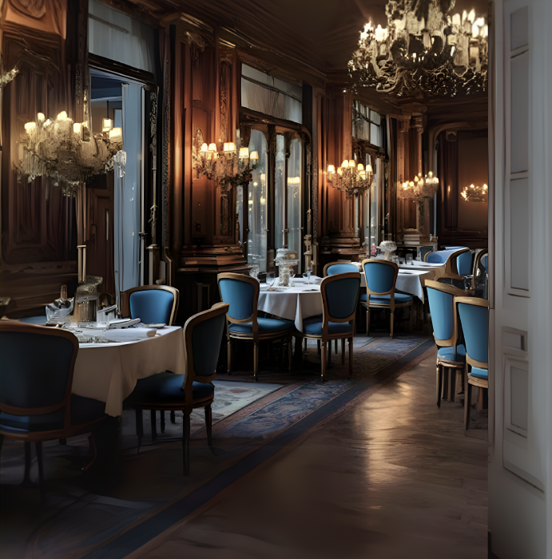

Saveurs de France
Une expérience gastronomique exquise qui capture l'âme de la cuisine française. Dans une ambiance d'élégance et de charme intemporel, notre restaurant propose des plats soigneusement élaborés, des intérieurs luxueux et une expérience culinaire inoubliable. Savourez des saveurs authentiques, des vins d'exception et un service impeccable dans un cadre qui célèbre la riche tradition de la gastronomie française.

Témoignages
Clients satisfaits

- Louis Andre
Dîner chez Saveurs de France a été un véritable plaisir. La cuisine était raffinée, avec des saveurs parfaitement équilibrées. Le personnel était chaleureux et professionnel, dans un cadre très agréable
- James Blank
Nous sommes allés chez Saveurs de France pour célébrer notre anniversaire, et cela s'est transformé en une soirée inoubliable. Le cadre était élégant, les plats pleins de saveurs, et le service nous a fait sentir vraiment spéciaux. Nous sommes très reconnaissants pour cette expérience mémorable et nous reviendrons sans hésiter.
- Alice
Une très belle découverte. Dès l'arrivée, l'accueil était chaleureux et professionnel. La cuisine était délicate, pleine de saveurs, et le service attentionné a rendu l'expérience encore plus agréable.
- Léo Perrin
Nous avons célébré un anniversaire chez Saveurs de France, et tout était parfait. L'ambiance était élégante et chaleureuse, les plats délicieux et bien présentés. Le personnel a été attentionné tout au long de la soirée, ce qui a rendu ce moment vraiment spécial.
- Marie
Dîner chez Saveurs de France a été une expérience délicieuse du début à la fin. La cuisine était exceptionnelle, le service attentif et l'ambiance parfaite..
- Jules Martinez
Nous avons découvert Saveurs de France en cherchant un endroit pour essayer quelque chose de nouveau, et ce fut une très belle surprise. C'est le genre d'endroit où l'on a envie de revenir pour découvrir d'autres plats. Nous sommes vraiment reconnaissants pour cette expérience et le recommandons vivement.